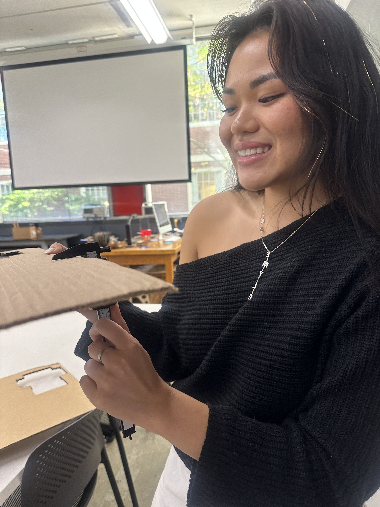

PS70: Week 2 — 2D Design
CAD Model
 Here is the first CAD model of my box.
Here is the first CAD model of my box.
Parameters Used
 Parameters used in my Fusion design.
Parameters used in my Fusion design.
Measuring Cardboard

Measuring cardboard thickness with calipers.
Engraving Initials
 I engraved my initials on the box using Illustrator.
I engraved my initials on the box using Illustrator.
First Attempt
 My first time using the laser cutter.
My first time using the laser cutter.
 Waiting for the laser cutter to finish.
Waiting for the laser cutter to finish.
 A misalignment mishap :(
A misalignment mishap :(
The Next Day…
 A scaling issue created this mini box.
A scaling issue created this mini box.
Third Time is the Charm üçÄ
 I created a dinosaur box with scales, head, and tail — painted in green, purple, and gold, with toilet paper roll feet and toenails.
I created a dinosaur box with scales, head, and tail — painted in green, purple, and gold, with toilet paper roll feet and toenails.
Final Version
 Here is my final dinosaur box!
Here is my final dinosaur box!
Assignment Part B: Fusion Modeling üõ†Ô∏è
Object 1: Mallet
 Measurements below:
Measurements below:


Object 2: Funnel
 Measurements below:
Measurements below: